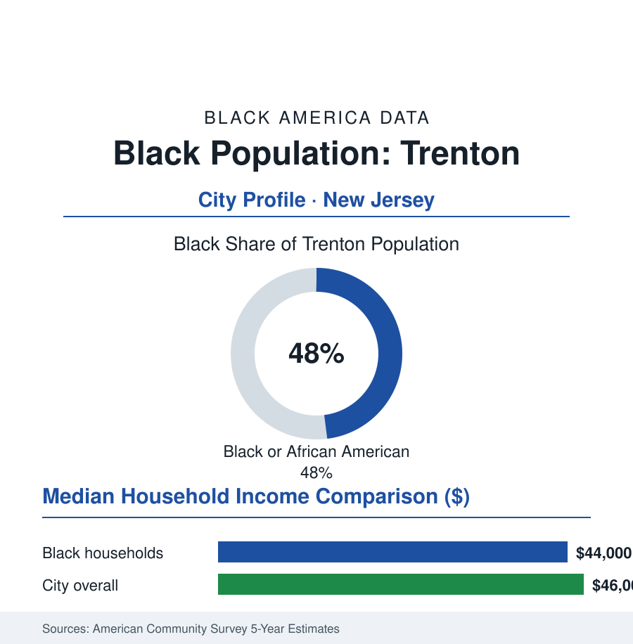

Black Cities
Black Trenton: 44,000 in the Capital City New Jersey Walks Past
Trenton's Black community, roughly 44,000 and half the capital, governs a city the state works in and leaves — the Making and remaking files in one ledger. The census portrait.

Trenton's Black community numbers roughly 44,000 people — about 48% of the city's 91,000 residents, its largest population, in a capital city with a two-century paradox: the state of New Jersey conducts its business inside a Black-governed city it has never fully funded, on a Delaware River site where 'Trenton Makes, the World Takes' still spans the bridge in lights over an industry that mostly left. This profile reads the capital's numbers.
Making: Pottery, Rubber, Roebling, and the Migration
Industrial Trenton's Black history begins in its antebellum free community — the churches (Shiloh Baptist's 1865 founding line in the city record) and the river-trade economy — and becomes mass history with the Great Migration into the making economy: the potteries and rubber works, the Roebling wire mills that spun the cables of the nation's suspension bridges (the Brooklyn Bridge's steel in Trenton wire), the Lenox and American Candle rows of job ladders. The neighborhoods filled on the industry's map: the Wilbur section's dense blocks, the Battle Monument streets, the East Ward's churches and clubs — a community that built, in the classic pattern the Trentoniana collection preserves, the full institutional shelf: the Carver Center's Y, the NAACP chapter's early docket, the Black press and funeral homes, the political clubs that converted numbers into the city's power by the 1960s (the first Black council members and then, in 1990, the city's first Black mayor in the state record — the capital's government passing to its majority as the factories thinned, the sovereignty-and-scarcity sequence of the Gary file in a smaller, denser key). The cultural file runs from the city's jazz rooms to its modern hip-hop line — Trenton's place in the Jersey corridor's rap map — the War Memorial's stage the civic room through it all.
The Capital Paradox
Trenton's fiscal file is this atlas's purest case of the tax-exempt capital: a third or more of the city's land in the state record is government-owned and untaxed — the State House complex, the courts, the agencies — while the state's own workforce commutes in from the suburbs that the city's poverty data subsidize in services. The PILOT and state-aid fights are the city's permanent budget literature (the capital-city aid line's rises and cuts moving the municipal ledger by whole departments), and the school file runs beside it (a district over eighty percent Black and Latino, state-operated for a generation under the Abbott remedies — New Jersey's school-finance landmark grew from cases like Trenton's, the funding formula's later rewrites still litigated in the state record). The governance data show the community running all of it: the mayor's office Black-held across most of the modern era (the Reed Gusciora interregnum aside in the recent cycle), the council, the county's Mercer politics, the state-legislative delegation the capital sends — the majority governing a city whose largest landowner pays no tax and whose largest employer answers to a legislature of suburban majorities. The development file is the counter-argument accumulating: the state-office leases and the agency relocations the city courts, the Roebling complex's conversion into lofts and a market hall on the old wire grounds, the riverfront ballpark and the arena years, the downtown residential trickle the housing data register.
The Economic Ledger
The ACS numbers: Black median household income in the mid-forty-thousands — near the city's own median in a rare flattening (the capital's poverty shared across its lines in the data), poverty in the mid-twenties, homeownership in the mid-forty percents on rowhouse stock the assessor prices as the region's bargain (the Philadelphia and New York metros' gravity both pulling at the city's two ends — the commuter data's twin flows, the gentrification question arriving by train in the housing file's newest pages). The workforce: the state itself the anchor (the agencies' clerical and professional tiers — the public-sector file in a company town of government), the hospital systems, the schools, the logistics ring along the river and the turnpike, and the small-business record of the chambers (the Black business association's corridors — South Broad, the reopened downtown blocks). The regional position is the file's open variable: a capital of 91,000 between two giants, with the cheapest housing and the hardest fiscal math of any city in this section — the data describe a place whose people govern completely and fund partially, waiting on a state that works in their city to decide what their city is for.
Reading Trenton's Numbers
Forty-eight percent, a bridge that still says Makes, and a statehouse that pays no rent: Trenton is the sovereignty file with a dome on it. Its Black community built the institutions, holds the offices, and carries the capital of a state whose wealth rings it on every side. The census counts 44,000 people. The state counts its offices. Between those two counts is the whole file — and the lights on the bridge, spelling out the older arrangement, still come on every night.
More in Black Cities
Black Atlanta: Population, Distribution, and Growth of a Black Metropolis
Metro Atlanta holds more than two million Black residents — roughly one in three, second only to New York. The suburban distribution, migration history, and composition of Black Atlanta in the census data.
Black New York: The Largest Black Population in America
The New York metropolitan area holds about 3.4 million Black residents — more than any metro in the nation — and the city itself about two million. The census profile.
Black Washington: The District and the Metro
The Washington metro holds about 1.6 million Black residents, and the District itself — long a majority-Black city — now records a Black share near 41 percent. The census profile.
Source: U.S. Census Bureau, 2020 Census and American Community Survey 5-year estimates; City of Trenton; New Jersey State Archives and the Trentoniana collection, Trenton Free Public Library.